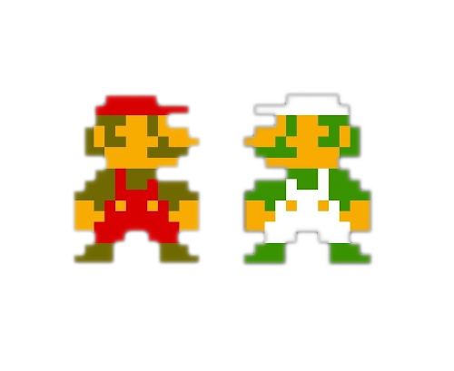
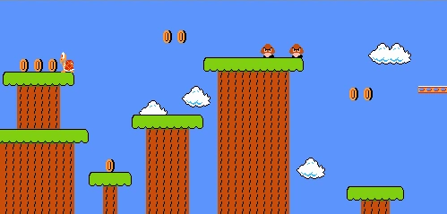
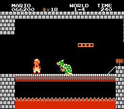

Review: Super Mario Bros.
From the hand of Shigeru Miyamoto, the mastermind of Nintendo, comes this title that came to create a new scheme within the platform genres that was growing up in the 80's.

Everything starts in the Mushroom Kingdom, when Princess Peach was kidnapped by the evil dragon Bowser, the Koopa King, to marry her. The only hope to face the koopa army and rescue the princess from Bowser's claws lies in two plumber brothers: Mario and Luigi.

Super Mario Bros. is divided into a series of eight worlds, which in turn are divided into four levels per world. We must go through the obstacles, fighting against enemies and collecting coins to increase our amount of lives. We have some power-ups: the Mushroom, that turns into Super Mario or Super Luigi, depending the character selected, increasing our size, strength and resistance; the Fire Flower, that allow us to launch fireballs to attack our enemies and the Star, that make us invulnerable for a limited time. Without forgetting the Green Mushroom hidden in some levels, that gives us an extra life.
Graphically, the scenarios have a careful detail level with very nice coloring, while the sprites have a fairly high detail level, along with a range of very fluid animations.

The controls are very precise and fluid: while A button works to jump, B button does the rest of the functions, like run and throw fireballs, depending how we press it.
In terms of audio, the sound effects are quite picturesque and fulfill their function perfectly, while the soundtrack wonderfully composed by Koji Kando is made up of every energetic melodies that fits perfectly with the setting of the level we are at that moment.

Super Mario Bros. is a recommended title for everyone who starts in the video game world, since it has a fairly difficult curve, good controls and also that it's a very important piece of video games history.